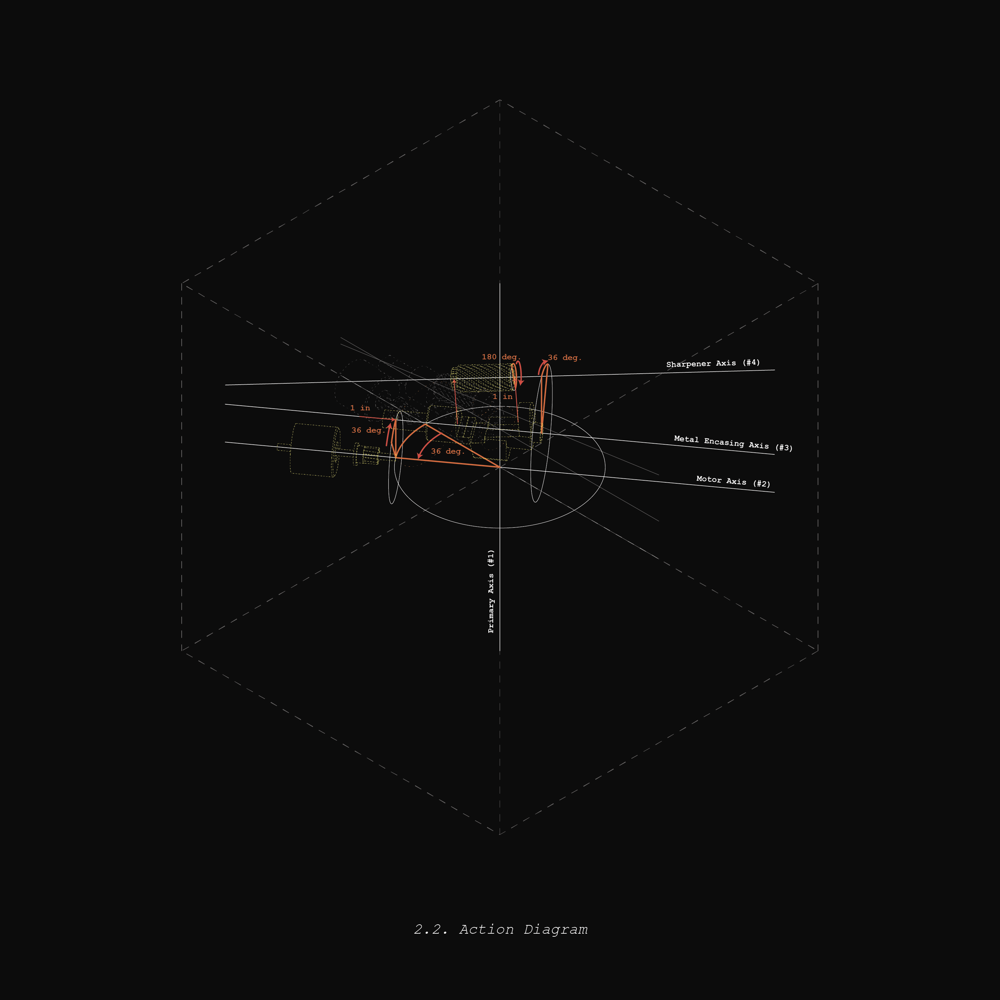
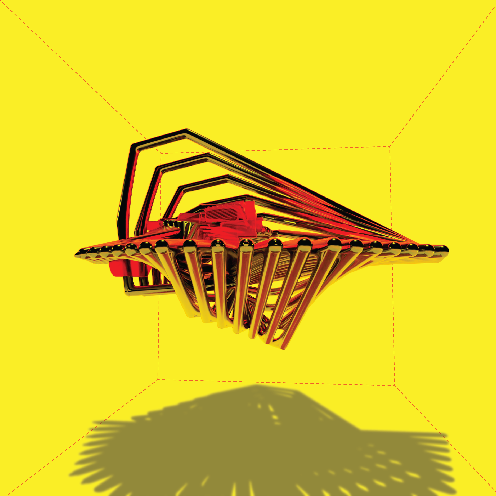
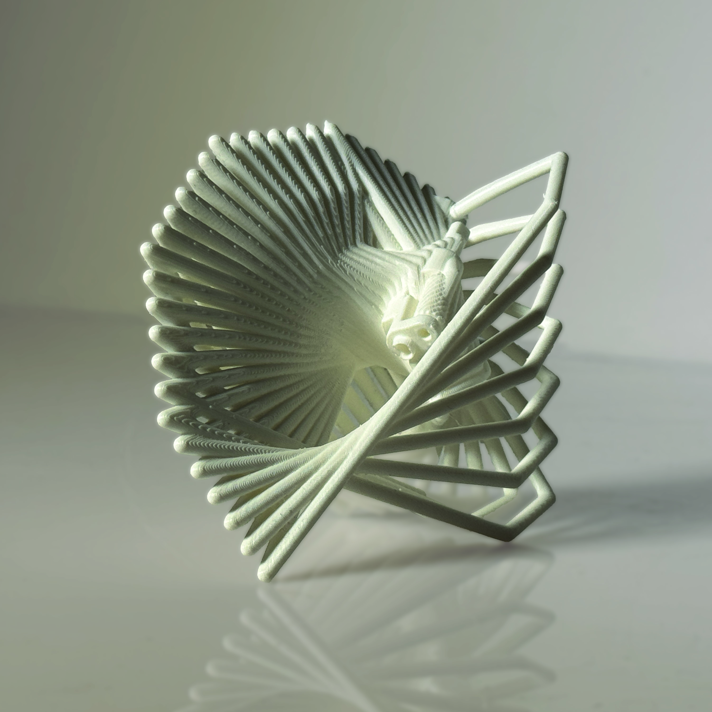
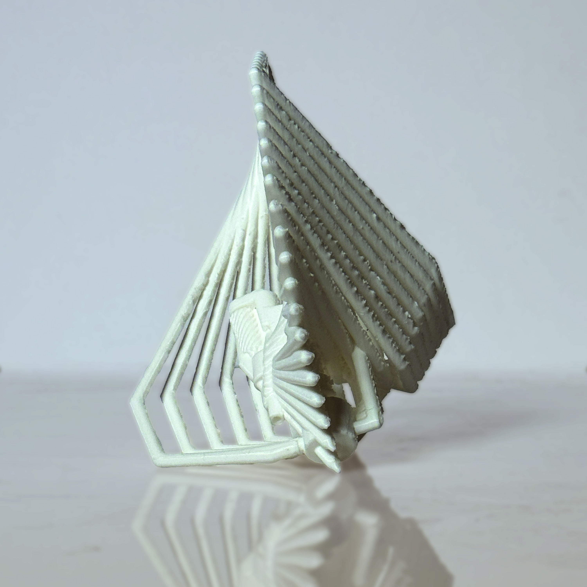

Elements of the drawing machine.
Spring 2026
In this project, three distinct but interconnected objects become a "drawing machine" as they are methodically transformed to create a new representative geometry. These object are actually the "soul" pieces from the pencil sharpener in the "Objects of Arresting Novelty" project, and their motion responds to the actions of their original object. All objects first rotate around the bounding box's centroid axis. Next, all are rotated around the axis of the motor, then around the sharpener's encasing, and finally the sharpener spiral rotates about its own axis. Meanwhile, the elements slowly seperate from each other, emulating an exploded axon diagram. By attaching points to important parts of the objects and creating a curve through them, a new geometry, the drawing, is constructed through the motion. This main curve construction was iterated one more time by dividing the curve, shifting the indecies of the points on each curve incrementally, and connecting the corrensponding incdecies to create the diagonal sweeping motion seen in the final model. This project led me to develop new methods of representation. I learned about color mixing and composition, model making, sequential transformation and animation using Grasshopper, and staging model photos.
Elements of the drawing machine.







